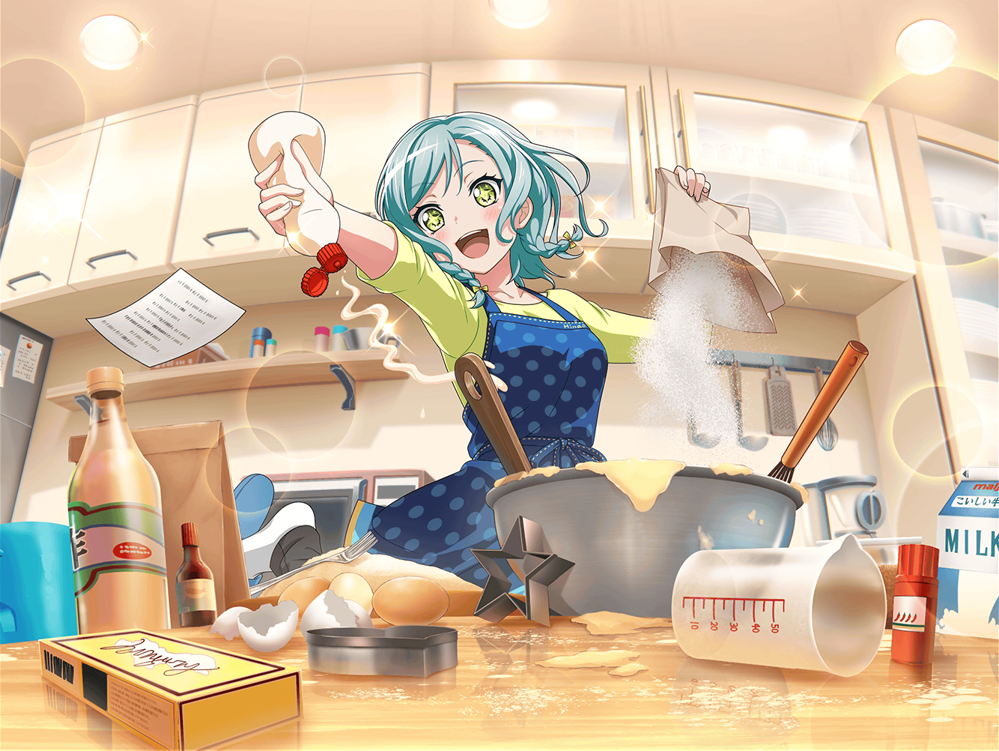

氷川家 リビング
紗夜
それじゃあ、日菜
始めるわよ
日菜
うんっ！ よろしくお願いしまーす！
日菜
（えへへ、おねーちゃんと一緒にクッキー作り～♪
おねーちゃんが約束を覚えてくれてたのも嬉しいし、
こんな風に何かを教えてもらえるのもすっごく嬉しいなぁー！）
日菜
ねーねー、おねーちゃん！
まずは何をすればいいの～？
紗夜
そうね、まずは完成までの
作業の工程を説明しましょうか
紗夜
このメモに書いてあるから、
それを読み上げるわね
日菜
はーい！
紗夜
作業の工程は多いように見えるけど、
１つ１つをしっかりやれば、あなたにもできるはずよ。
だって私にもできたのだから
紗夜
かと言って、全てに力を入れる必要はないわ。
お菓子作りには力を入れなければいけないところと、
入れなくてもいいところがあるの
日菜
わぁ、おねーちゃん、なんか先生っぽい！
紗夜
……ふふ。
今のは羽沢さんの受け売りよ
日菜
よーし、じゃあ、さっそく頑張るぞ～！
日菜
まずは、生地作りだね♪
日菜
（え～と、確か薄力粉を振るって……
バターと砂糖、卵を混ぜるんだよね）
紗夜
薄力粉は１２０gだから……
日菜
（わ～、おねーちゃん、ちゃんと量ってる……
さすが、几帳面だなぁ～）
日菜
（砂糖は４０グラムって言ってたから……
う～ん、大さじで大体このくらいかな？）
紗夜
日菜、どう？
ここまでわからないところはない？
日菜
バッチリだよ、おねーちゃん！
紗夜
そう、なら、
次の工程に進みましょうか
日菜
はぁ～い♪
日菜
型抜き楽しかったね～♪
紗夜
そうね。
さて、次は最後の工程よ
日菜
わ～い！ やっと食べられるところまできたね～！
紗夜
ええ、今から焼くわよ
日菜
どんな感じに焼けるんだろ？ 楽しみだなぁ～♪
２０分後
紗夜
さあ、完成よ
日菜
わーい、やったぁ♪
紗夜
いい焼き具合ね。
早速、味見してみたらどう？
日菜
ううん、最初の一口は
おねーちゃんにって決めてたんだ～！
だから、おねーちゃん、どうぞ♪
紗夜
そうだったの。
なら、遠慮なくいただくわね
……ん
日菜
……どう？
おねーちゃん？ おいしい？
紗夜
…………硬いわ
日菜
えぇ！？
どれどれ……ハグっ！
……って、硬ぁ～い！
日菜
お、おねーちゃんの食べてみてもいい？
紗夜
ええ、いいわよ
日菜
いただきます！
もぐもぐ……美味しい！
日菜
えぇ～？ なんで～？？
おねーちゃんに説明してもらった通り作ったのにぃ～……
紗夜
……日菜。
本当に説明した通りにちゃんと分量を量って、
工程を守って作ったのかしら？
日菜
うっ……
だ、だいたい合ってるはずだよ……
紗夜
だいたい……？
それはつまり、しっかりとは量らなかった、
ということ？
日菜
うっ、うぅ……
実は、なんとなーくで進めた所が……
紗夜
はぁ……
だから言ったでしょう？
紗夜
力を抜くことも大切だけれど、
力を入れなければいけないところもあるのよ
日菜
ごめんなさい……
日菜
（せっかく教えてもらってるのに、
がっかりさせちゃったかな……）
紗夜
まったく、しょうがないわね。
今度はちゃんと見ていてあげるから
最初からやり直しましょう
日菜
おねーちゃん……！
うんっ！ 今度こそ頑張って、美味しいクッキーを作るね！